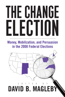

<body bgcolor="#FFFFFF" text="#000000" link="#0000FF" vlink="#CC0000" alink="#CC0000"><center><hr width="350" size="1" align="center" noshade>A thorough assessment of how the 2008 elections were financed and conducted<hr width="350" size="1" align="center" noshade><p><a href="https://cdcshoppingcart.uchicago.edu/Cart/ChicagoBook.aspx?ISBN=9781439903384&&PRESS=temple" target="_top">Buy this book!</a> | <a href="https://cdcshoppingcart.uchicago.edu/Cart/Cart.aspx?PRESS=temple" target="_top">View Cart</a> | <a href="https://cdcshoppingcart.uchicago.edu/Cart/Cart.aspx?PRESS=temple" target="_top">Check Out</a></p><p></p></center><!--none//--><h1>The Change Election</h1>
<H2>Money, Mobilization, and Persuasion in the 2008 Federal Elections</H2>
<h3>edited by David Magleby</h3>
<P>cloth 1-4399-0338-7 $77.50, Nov 10, <FONT COLOR=#990033>Available</FONT>
<br>paper 1-4399-0339-5 $34.95, Nov 10, <FONT COLOR=#990033>Available</FONT>
<br>Electronic Book 1-4399-0340-9 $34.95 <FONT COLOR=#990033>Available</FONT>
<BR> 336 pp
6x9
66&nbsp;tables 6&nbsp;figures
</P><BLOCKQUOTE><I>"When future historians look back on the 2008 election, they are certain to view it as a defining moment in American politics. David Magleby explains in detail why, in his well-documented book, </i>The Change Election<i>. This book is a must read for anyone interested in gaining a better understanding of the evolution of the election process in America."</I>
<br>&#151<b>Rodney A. Smith</b>, author of <I>Money, Power, and Elections: How Campaign Finance Reform Subverts American Democracy</I></I></BLOCKQUOTE>
<p>The 2008 election was an extraordinary event that represented change at many levels. The candidates’ innovative campaigns changed how funds were raised, how voters were mobilized, and how messages were communicated through advertising and the Internet. Parties and interest groups played their own important role in this historic election. In <em>The Change Election</em>, David Magleby assembles a team of accomplished political scientists to provide an in-depth analysis of this groundbreaking presidential election. Through a set of compelling case studies, these scholars examine the competition for votes in a dozen competitive House and Senate contests and in the race for the White House in five states: Ohio, North Carolina, New Hampshire, Colorado, and New Mexico.</p>
<p>Backed by a wealth of data and extensive interviews, the contributors provide an up-close look at the interactions of candidates' individual skills and personalities with the larger political forces at work in the election year. This book offers insights into the rapidly evolving organizational and technical aspects of campaigning.</p>
<p>Building on a tested methodology, <em>The Change Election</em> explores the interplay of money and electioneering. Magleby builds on more than a decade of prior studies to show the ways participants in our electoral process have adapted to statutory and judicial decisions and how the 2008 election has the potential to transform American electoral politics.</p>
<BR>&nbsp;<h2>Excerpt</h2><P>Excerpt available at <a href="http://www.temple.edu/tempress">www.temple.edu/tempress</a></p>
<BR>&nbsp;<h2>Reviews</h2>
<p><I>"David Magleby has produced a series of fine books on the way that candidates, parties, and interest groups campaign in contemporary elections. In a time when the rules are rapidly changing and campaign activity is less transparent, </I>The Change Election<I> is essential reading for anyone who wants to understand the conduct of campaigns."</I> <br>&#151<b>Clyde Wilcox</b>, Georgetown University
<p><i>"</i>The Change Election<i> offers a carefully researched and well-documented look at a U.S. election that turned many conventions upside down and reengaged the electorate in surprising and important ways. The book’s use of a range of evidence, including the spoken word collected in interviews, deepens the conversation in political science and public policy discussions and beyond. A robust democratic process depends on this strengthened conversation."</i>
<br>&#151<b><i>The Oral History Review</i></b>
<BR>&nbsp;<h2>Contents</h2><P>
<p>List of Figures and Tables
<br>Preface
<br>1. A Change Election
<br>2. How the 2008 Elections Were Financed
<br>3. Elections as Team Sports: Spending by Candidates, Political Parties, and Interest Groups in the 2008 Election Cycle
<br>4. Voter Mobilization in the 2008 Presidential Election
<br>5. The Conditional Party Teams of the 2008 North Carolina Federal Elections
<br>6. Shifting Granite: New Hampshire’s Change from Largely Republican to Largely Democratic over Two Election Cycles
<br>7. The Battle for Ohio in 2008: The Politics of Pragmatism
<br>8. Colorado: Democrats Expand Their Base and Win Unaffiliated Voters
<br>9. Moving from Red to Blue: The 2008 New Mexico Presidential, Senate, and First Congressional District Races
<br>10. Continuity and Change in the 2008 Federal Elections
<br>Appendix A: List of Studies
<br>Appendix B: List of Interviews
<br>Contributors
<br>Index
</P><BR>&nbsp;<H2>About the Author(s)</H2>
<table><tr><td valign="top"><img src="/tempress/authors/2120_au.gif" height="90" width="75"></td><td width="100%" valign="middle"><p><b>David Magleby</b> is Dean of the College of Family, Home, and Social Sciences, Distinguished Professor of Political Science, and Senior Research Fellow at the Center for the Study of Elections and Democracy at Brigham Young University. He is the editor of <i>Financing the 2000 Election</i> and a coeditor of <i>Financing the 2004 Election</i> (with Anthony Corrado and Kelly D. Patterson) and <i>Financing the 2008 Election</i> (with Anthony Corrado), and for nearly two decades he has been a coauthor of <i>Government by the People</i>, an introductory American government textbook. He has also written numerous other campaign finance books.</P></td></tr></table>
<BR><H2>Subject Categories</H2>
<p><A HREF="/tempress/political.html" TARGET="_top">Political Science and Public Policy</a>
</p>
<p align="center"><a href="https://cdcshoppingcart.uchicago.edu/Cart/ChicagoBook.aspx?ISBN=9781439903384&&PRESS=temple" target="_top">Buy this book!</a> | <a href="https://cdcshoppingcart.uchicago.edu/Cart/Cart.aspx?PRESS=temple" target="_top">View Cart</a> | <a href="https://cdcshoppingcart.uchicago.edu/Cart/Cart.aspx?PRESS=temple" target="_top">Check Out</a></p><p><font face="Arial" size="1"><a href="copyright.html" onMouseOver="window.status='Web Copyright Policy';return true;" onMouseOut="window.status=''" title="Web Copyright Policy">&copy;</a> 2015 <a href="http://www.temple.edu" target="new" onMouseOver="window.status='Link to Temple University home page';return true;" onMouseOut="window.status=''" title="Link to Temple University home page">Temple University</a>. All Rights Reserved. http://www.temple.edu/tempress/titles/2120_reg.html</font></p>